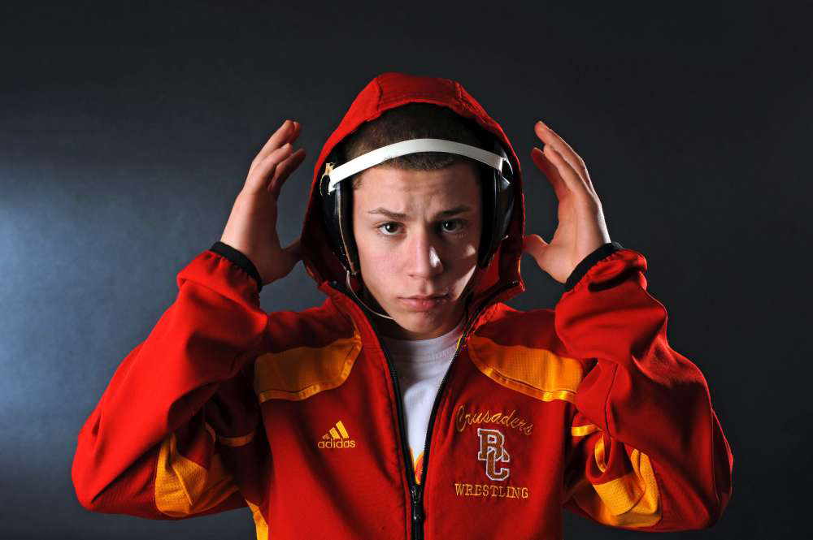

Top 5 Commits (Seniors)
#5. Luke Pletcher (GR Latrobe) Ohio State Commit.
From Pennsylvania to Ohio Luke Pletcher is an amazing pickup for the Buckeyes. With senior Johnni DiJulious graduating this year, the Bucks are in dier need for a freshman who can make an impact at 133lbs next year. Pletcher, a 3 time PIAA state champ is exaclty what Ohio State needs next year in a year where a lot of seniors in the Big 10 are gradating Pletcher looks to shine very early in his career.
#4. Chad Red (New Palestine) Nebraska Commit.
Fancy. Flashy. Effective. Three words to describe 4X undefeated Indiana state champion and #1 ranked at 132lbs Chad Red. Red, a Nebraska commit will bring new life and attitude to the Cornhuskers next year and with Luke Pletcher going to the Buckeyes next year as well, everyone in the Big 10 can't wait to see how the two will battle at their projected 133lbs in college.
#3. Nick Suriano (Bergen Catholic) Penn State Commit.

Record breaker. That has to be the only thing on your mind when you think of Penn State commit Nick Suriano. Nick is the 2nd person in New Jersey histroy to finish as an undefeated 4X state champion. Along with being the first ever 4X Beast of the East champion. Suriano is entering a loaded Penn State recruiting class and looks to help the Nitany Lions continue their wrestling dominance next year.
#2. Alex Marinelli (Graham) Iowa Commit.
Jordan Trained. Jordan Tough. That's what you're getting with the Iowa commit in Alex Marinelli. This 4X Ohio state champion wrestles for one the best programs, under one of the best coaches in high school wrestling in Jeff Jordan. Marinelli, an Iron Man champion is nothing short of a hard nosed, mean, all together wrestler, so Iowa is a perfect fit for the Ohio stud.
#1. Mark Hall (Apple Valley) Penn State Commit.
6X Minnisota state champion. The most highly recruited wrestler in recent history. 230-5 high school career record including a dominant 10-2 win over last years #1 ranked Anthony Velencia. Mark Hall is nothing less then the best high school wrestler in the country. Hall will go down in Minnisota history as one of the best wrestlers ever and he hopes to continue his success in college with goals of becoming a 4X indiviudal and 4X team champion.